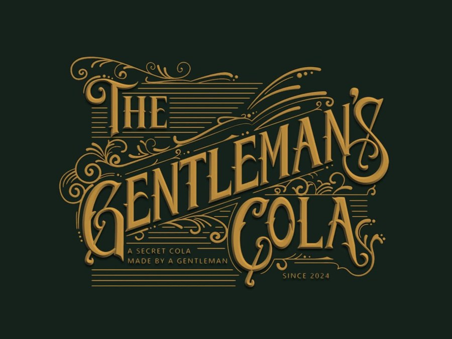
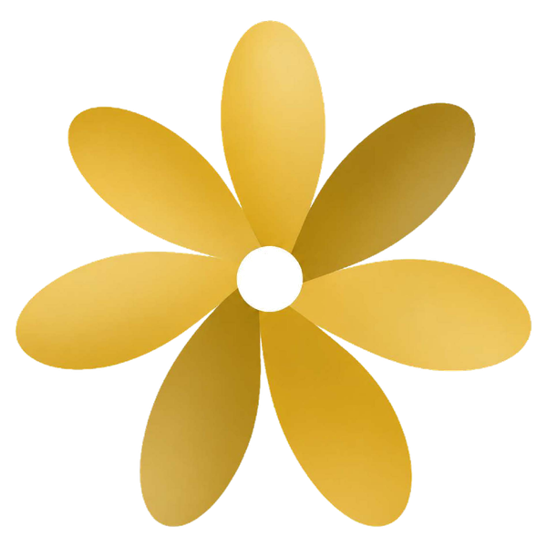
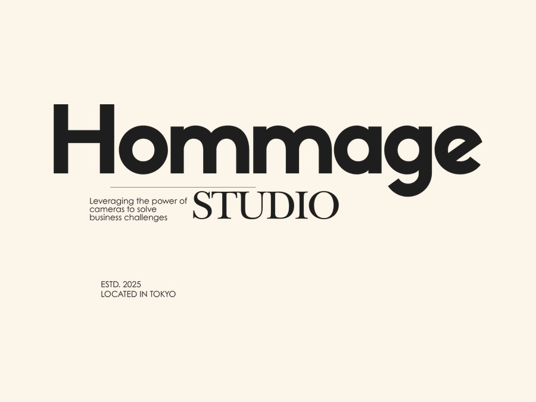

クラフトコーラの提供
コーラジェントルマン
大谷さん
懐かしいけど、新しい。子どもも大人も、同じグラスで乾杯できる一杯を。
プロフィール準備中

素敵会 縁日 参加する素敵会
soko station 146（新木場） 参加無料
人生で1番の
素敵な体験を届けます。
子どもには子どものままで大人の体験を。
大人には子どもになって懐かしい体験を。
参加無料 ／ 事前申込制 ／ 入退場自由
INTRODUCTION
子どもたちが大好きな「縁日」。
あの空間に、学びも、はじめての体験も、
人との出会いも、対話も、音楽も、遊びも、
ぜんぶ詰め込んでみたくなりました。
ただ楽しかった、で終わらせない。
普段は考えないことを、少しだけ考えてみたり。
知らなかった世界に、そっと触れてみたり。
知らない誰かの優しさに、出会ってみたり。
そんな「体験のデザイン」が、
会場のあちこちに散りばめられた一日です。
EXPERIENCE
好きなものから、ひとつずつ。
ぜんぶ回らなくても大丈夫です。
小学4年生が運営する、
想いの伝わる企画。
クラフトコーラ。
拘りと懐かしさ。
プロシンガー。
生歌が流れる。
瞑想や呼吸法。
自分の在り方に向き合う。
色と言葉の
ワークショップ。
大切な人と、
最高の思い出を。
会場から届ける、
こよりびのラジオ。
会場をめぐって、
ひとつずつ集める。
EXHIBITORS
※ 出展者は今後も増える予定です。

クラフトコーラの提供
大谷さん
懐かしいけど、新しい。子どもも大人も、同じグラスで乾杯できる一杯を。
プロフィール準備中
ヨガ × 在り方
翠さん
身体を動かすだけじゃなく、自分の在り方にも少しだけ目を向ける時間。大人向け中心です。
プロフィール準備中

記念写真の撮影
大智さん・任さん
友人と、家族と、恋人と。フォトブースではなく、この日の記憶そのものを持って帰れる撮影です。
プロフィール準備中
音楽・生歌
Satone
聴くだけの音楽じゃなく、つい口ずさんでしまう時間を。大人も、少し子どもに戻れます。
プロフィール準備中
色と言葉の体験ワークショップ
一般社団法人
3分でできる、子どもと大人が一緒に考える体験。色をきっかけに、自分の気持ちと相手の考えに触れます。
ワークショップ名・紹介文 準備中
遊び縁日
金田さん
小学4年生が中心になって、大人にも子どもにも遊びを届けます。楽しませる側にも、なってみる。
プロフィール準備中
FOOD & FESTIVAL
※ お酒は20歳未満の方への提供はいたしません。お車・自転車でお越しの方はご遠慮ください。
イベントへの参加自体は無料です。
飲食・一部の体験・物販は有料となります。
お支払いは金券制を予定しています。
ABOUT THE EVENT
当日のこと、準備のこと、
こよりびの日々をInstagramで発信しています。
当日の写真を投稿してくださるときは、
@koyoribi.jp のメンションと #素敵会縁日 を
つけてもらえるとうれしいです。
FAQ
イベント自体への参加は無料です。一部の体験・飲食・物販等は有料となります。
年齢制限はありません。ただし、お子さまは必ず保護者の方と一緒にご参加ください。
もちろんです。子どもから大人まで楽しめる、世代を越えた縁日を目指しています。
はい。15:00〜21:00の間、自由に入退場いただけます。
原則として事前申し込み制です。当日の参加については、会場の混雑状況を見ながら受付予定です。
ご利用いただけます。ただし、会場内の混雑状況や設備によっては移動しづらい場合があります。
専用スペースは設けておりません。あらかじめご了承ください。
ございます。
飲食物をご購入いただく際は、必ず各提供者へ原材料・アレルギー情報をご確認ください。主催者側ですべてのアレルギー対応を保証するものではありません。
当日はイベントの記録・広報を目的として、写真および動画を撮影する場合があります。SNS・Webサイト等へ掲載する可能性があります。参加申し込み時に確認・同意項目を設けています。
会場所定の喫煙可能場所をご利用ください。
ご用意しています。ただし、20歳未満の方への提供はいたしません。また、お車・自転車でお越しの方への提供もお断りしています。
専用のクローク・荷物預かりはございません。お荷物・貴重品は各自で管理をお願いいたします。
info@tomoshibi-inc.co.jp までご連絡ください。
キャンセル待ちとして受付し、参加可能となった場合は開催1週間前までを目安に運営からご連絡します。
この場を一緒につくってくださる
企業・団体の皆さまへ
素敵会 縁日は、11月7日の一日で終わらせたいイベントではありません。 ここを入口に、これからも一緒に何かをつくっていける方を探しています。
協賛・コラボについて問い合わせる